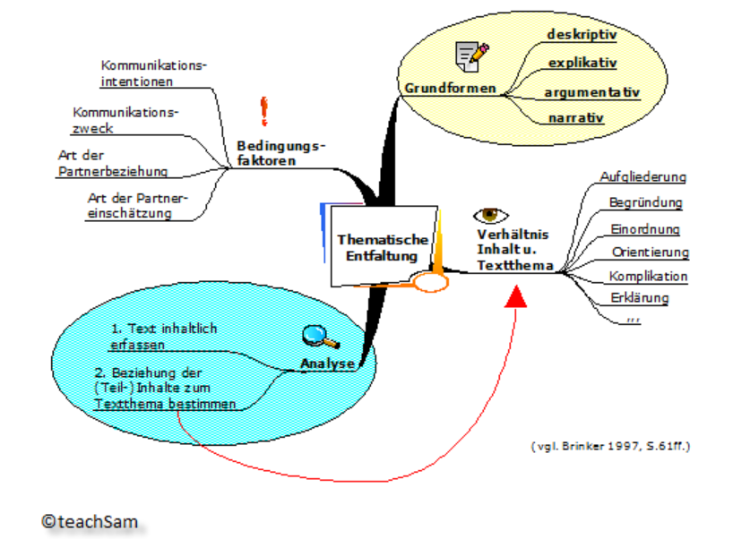
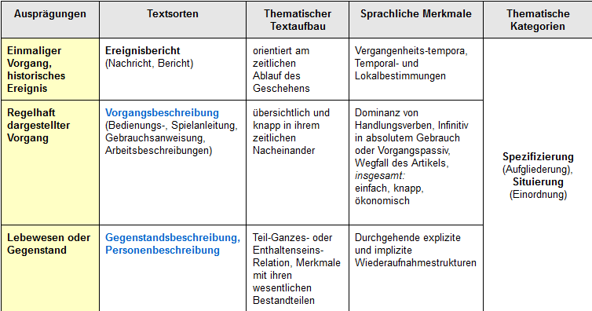
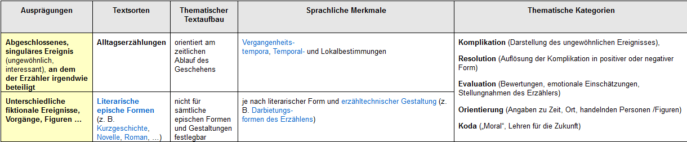
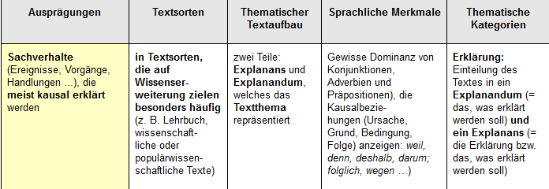

8 Textfunktionen
8.1 Brinkers Textfunktionsbegriff
Textfunktionen: textextern, betreffen: die textinterne Ebene
Ausgangspunkt: Sprechakttheorie/Sprachhandlungen sind Grundlage der Kommunikation
Illokution als wichtigster Teilakt – gibt Hinweise, wie die Proposition aufzufassen ist, bezeichnet die kommunikative Funktion der Sprechhandlung, „legt den Handlungscharakter einer Äußerung fest“ (BRINKER)
Illokutionsindikatoren, performative Verben
Textfunktion: bestimmt den „Kommunikationsmodus des Textes“ (Brinker, 101)
„Der Terminus Textfunktion bezeichnet die im Text mit bestimmten, konventionell geltenden, d.h. in der Kommunikationsgemeinschaft verbindlich festgelegten Mitteln ausgedrückte Kommunikationsabsicht des Emittenten. Es handelt sich also um die Absicht des Emittenten, die der Rezipient erkennen soll, sozusagen um die Anweisung (Instruktion) des Emittenten an den Rezipienten, als was dieser den Text insgesamt auffassen soll, z. B. als informativen oder als appellativen Text.“ (Brinker 2001: 95)
8.2 Indikatoren der Textfunktion
Die Textfunktion wird durch bestimmte innertextliche (sprachliche) und außertextliche (kontextuelle) Mittel angezeigt –>> Indikatoren der Textfunktion Brinker, 104 ff.
Drei Grundtypen:
- Typ 1 signalisiert die Art des intendierten kommunikativen Kontakts –- explizit performative Formeln, Satzmuster, „direkte” Signalisierung der Textfunkton
- Typ 2 signalisiert die Einstellung des Emittenten zu Textinhalt und Textthema – Wahrheit und Wahrscheinlichkeit des Textinhalts, Sicherheitsgrad seines Wissens … Wertung, Interesse, psychische Haltung – „Thematische Einstellung“. Wichtig ist auch die evaluative Einstellung.
- Typ 3 sind Kontextuelle Indikatoren, situativer u. insbesondere institutioneller Rahmen des Textes, gesellschaftlicher Handlungsbereich, Hintergrundwissen usw. – ausschlaggebend, wenn die TF durch 1. und 2. nicht ermittelt werden kann, dann geben Kontextindikatoren darüber Aufschluss.
8.3 Klassifikationsansätze
Fast alle Ansätze gehen auf BÜHLERS Organon-Modell zurück.
Sprache als Werkzeug, mittels dessen der Emittent mit dem Rezipienten über Dinge in der Welt kommuniziert.
Sprachliche Zeichen fungieren gleichzeitig
- als „Symbol“ für Gegenstände und Sachverhalte in der Wirklichkeit (= Darstellungsfunktion),
- als „Symptom“ der Innerlichkeit des Emittenten (= Ausdrucksfunktion)
- und als „Signal“, indem sie an den Rezipienten appellieren (= Appellfunktion).
Illokutionsklassen nach SEARLE:
- Repräsentative (Assertive),
- Direktive,
- Kommissive,
- Expressive,
- Deklarative.
Repräsentative ≈ Darstellung,
Expressive ≈ Ausdruck, Direktive ≈ Appell uneinheitliche Klassifikationskriterien.
8.4 Exkurs: Sprechhandlungen
Sprechaktklassifizierungen als Grundlage für Textfunktionen. Searles Sprechaktklassen.
8.5 Brinkers Klassifikation der Textfunktionen
Kriterium: Art des kommunikativen Kontakts, die der Emittent mit dem Text dem Rezipienten gegenüber zum Ausdruck bringt. (Ausgehend von Searles Illokutionstypologie, anstelle der Kategorien „Repräsentativ“ und „Expressiv“ werden „Informations-“ und „Kontaktfunktion“ eingeführt.)
- Informationsfunktion
- Appellfunktion
- Obligationsfunktion
- Kontaktfunktion
- Deklarationsfunktion
8.5.1 Informationsfunktion
Der Emittent gibt dem Rezipienten zu verstehen, dass er ihm ein Wissen vermitteln, ihn über etwas informieren will.
Paraphrase: Ich (der E.) informiere dich (den R.) über den Sachverhalt X (Textinhalt)
Indikatoren: explizit performative Formeln mit den Verben informieren, melden, mitteilen, eröffnen, berichten, benachrichtigen, unterrichten usw.
Thematische Einstellung: Sicherheitsgrad, Wahrscheinlichkeitswert …
Beispiele:
Ich weiß /Mir ist bekannt, dass … Es ist der Fall/es steht fest / es trifft (nicht) zu, dass … Es ist wahrscheinlich / möglich / unwahrscheinlich, dass, …Einschränkung des Wissens des Textemittenten – Angabe der Quelle, Modalverben, Modalwörter (offenbar, vermutlich …) etc.
Textbeispiel: Die Initiative „Kein Atommüll in Würgassen“ will nach eigenen Angaben ermittelt haben, daß bei einem Betriebsunfall im Kernkraftwerk Würgassen (Weser) 14 Arbeiter mit Radioaktivität in Berührung gekommen sind. (aus: Hamburger Abendblatt vom 30.8.82)
- Textsorten (TS): Nachricht, Meldung, Bericht, Beschreibung, Untersuchungsbefund, Sachbuch, Buchbesprechung …
Manchmal verbunden mit Bewertung, „evaluativer Einstellung“ (etw. gut/schlecht finden). TS: Leserbrief, Gutachten, Rezension
Beispiel: Eine sprachlich differenzierte Prosa bietet dieses (schludrig lektorierte) Buch nicht; es liefert jedoch etliche Informationen über einen bei uns fast unbekannten Kontinent. (DIE ZEIT vom 21.11.80)
INFORMATION + negative Wertung + positive Wertung Neutralität durch ‚referierenden Konjunktiv‘
Wertung von Nachrichten auch durch Auswahl und Anordnung. Verschiedene Sichtweisen / Formulierungen eines Ereignisses.
8.5.2 Appellfunktion
Der E. Gibt dem R. zu verstehen, dass er ihn dazu bewegen will, eine bestimmte Einstellung einer Sache gegenüber einzunehmen oder eine bestimmte Handlung zu vollziehen. (Meinungs-/Verhaltensbeeinflussung)
- Paraphrase: Ich (der E.) fodere dich (den R.) auf, die Einstellung X zu übernehmen/die Handlung Y zu vollziehen.
Beispiel (Zeitungskommentar)
In dieser Zwischenphase … ist eine Kredithilfe für wirklich in ihrer Existenz gefährdete Landwirte eine vernünftige Lösung. Sie sollte jedoch bald doppelt wirksam werden. Denn auch hier gilt: Wer schnell gibt, gibt doppelt. (HA v. 28.7.76)
Politische Kommentare appellieren sowohl an politisch interessierte Leser als auch an die politischen Akteure.
Textsorten (TS): Werbeanzeige, Propagandatext, Kommentare in verschiedenen Medien, Arbeitsanleitung, Rezept, Gesetzestext, Gesuch, Antrag, Bittschrift, Predigt usw.
Indikatoren:
explizit performative Formeln mit den Verben: auffordern, anordnen, befehlen, bitten, raten, empflehlen, fragen, verlangen, fordern, beantragen, beauftragen …
grammatische Indikatoren:
- Imperativsatz (Nimm Vim!)
- Infinitivkonstruktion (Pflegen und pflegen lassen – Werbung für Nivea milk)
Häufig auch in Kochrezepten, Gebrauchsanweisung, Bedienungsanleitung.
Instruktion – besondere Variante der Appellfunktion (Veranlassen und Informieren; Wenn-dann-Relation; im Vordergrund steht das Interesse des Emittenten an der Durchführung der in der Proposition bezeichneten Handlung) - Interrogativsatz (TS: Fragebogen, Interview, Lehrbuch)
- Satzmuster mit sollen, müssen + Infintiv, haben + zu + Infinitiv, sein + zu + Infinitiv u.a. in Textsorten: Gesetz, Verordnung …
- Thematische Einstellung:
- Normative Einstellung und Einstellungen, die die Interessen (Bedürfnisse, Wünsche, Präferenzen) des Emittenten selbst bezeichnen, z.B. Ich möchte, dass der Sachverhalt X realisiert wird; ich hätte gern, wenn …; ich wünsche mir, dass …; ich brauche die Sache X usw.
- Evaluative Einstellung. Der Emittent möchte, dass der Rezipienten seine (positive oder negative) Bewertung des Sachverhalts übernimmt (und sich entsprechend verhält).
Bei Werbetexten wird die Kaufaufforderung nur selten in direkter Form realisiert. Aufforderungen werden indirekt geäußert (indirekte Sprechakte), etwa durch Empfehlungen, Expertenmeinungen usw.
8.5.3 Obligationsfunktion
Der Emittent gibt den Rezipienten zu verstehen, dass er sich ihm gegenüber dazu verpflichtet eine bestimmte Handlung zu vollziehen.
Textsorten (TS): Vertrag, (schriftliche) Vereinbarung, Garantieschein, Gelübde, Gelöbnis, Diensteid, Angebot usw.
Paraphrase: Ich (der Emittent) verpflichte mich (dem Rezipienten gegenüber), die Handlung X zu tun.
Beispiel Vaterschaftsanerkenntnis: Demgemäß verpflichte ich mich, dem Kinde vom 15.6.1962 an bis auf weiteres eine monatliche Rente von 100 DM … zu entrichten.
Stark institutionalisiert, meist durch eine direkte Signalisierung der Textfunktion gekennzeichnetund zwar die explizit performative Verben: sich verpflichten, schwören, übernehmen, sich bereit erklären, garantieren, sich verbürgen, wetten, anbieten usw.
- Thematische Einstellung voluntativer und intentionaler Art: ich beabsichtige, habe vor, plane, werde, bin entschlossen usw. Dadurch wird auch der Grad an Bereitschaft ausgedrückt.
Nicht immer sind Obligationensignale vorhanden. Dann ergibt sich die Obligationsfunktion aus dem thematischen Zusammenhang, aus anderen innertextlichen Merkmalen (z.B. Überschriften) und/oder dem Handlungs- und Situationskontext.
Beispiel Vertragstext
Sämtliche mit diesem Vertrag und seiner Durchführung verbundenen Kosten trägt der Käufer allein. Die Kosten für die Löschung etwa vorhandener, vom Käufer nicht übernommener Belastungen trägt jedoch der Verkäufer.
8.5.4 Kontaktfunktion
Der Emittent gibt den Rezipienten zu verstehen, dass es ihm um die personale Beziehung zu Rezipienten geht (insbesondere um die Herstellung und Erhaltung des persönlichen Kontakts).
Textsorten (TS): Brief, Kondolenzschreiben, Danksagung, Gratulationsschreiben, Leserbrief
Performative Formeln: danken, um Entschuldigung bitten, beglückwünschen, gratulieren, sich beschweren, willkommen heißen, Beileid aussprechen, verfluchen usw.
Häufig an feste gesellschaftliche Anlässe geknüpft, die den Ausdruck der psychischen Einstellung des Emittenten verlangen (bedauern, entzückt sein, sich freuen …). Entscheidend ist nicht die Gefühlsäußerung als solche, sondern die Erfüllung einer sozialen Erwartung durch die Emittenten.
Beispiel Danksagung auf Briefkarte
Über die Glückwünsche und Aufmerksamkeiten zu unserer Verlobung haben wir uns sehr gefreut und danken Ihnen herzlich dafür.
performative Formeln
psychisch-emotionale Einstellung
Partizipationstexte: der Emittent bringt seine Anteilnahme mit den Rezipienten zum Ausdruck. Wenn sich die zugrunde liegenden Ereignisse wiederholen, werden sprachliche Formen benutzt, die einen formelhaften Charakter besitzen, zum Beispiel in Kondolenzbriefen.
Geschäftsbrief (Brinker 106)
Sehr geehrter Herr B.,
wir danken Ihnen für den von uns erteilten Auftrag und sichern Ihnen die Fertigstellung der Arbeiten zum 30 d.M. verbindlich zu.
Mit freundlichen Grüßen
Fa. A.
Auftragsbestätigung mit Termingarantie
Kontakt- oder Obligationsfunktion?
8.5.5 Deklarationsfunktion
Der Emittent gibt den Rezipienten zu verstehen, dass der Text eine neue Realität schafft, dass die (erfolgreiche) Äußerung des Textes die Einführung eines bestimmten Faktums bedeutet.
Textsorten (TS): Testament, Ernennungsurkunde, Schuldspruch, Bevollmächtigung, Bescheinigung
Fast immer an gesellschaftliche Institutionen gebunden und direkt - durch feste, ritualisierte und explizite Formeln - ausgedrückt.
Paraphrase: Ich (der Emittent) bewirke hiermit, dass X als Y gilt.
Beispiel Testament
Ich setze meinen Bruder Franz S. zu meinem alleinigen Erben ein.
- Als Indikatoren der Textfunktion dienen häufig auch Überschriften: Testament, Urkunde, Bescheinigung, Vollmacht usw.
8.6 Redegegenstand (Thema)
Thema als Kern des Textinhalts:
Textinhalt: bezogen auf “Gegenstände”: Person(en), Sachverhalt(e), Ereignis(se), Handlung(en), Vorstellung(en) …
Textthema: größtmögliche Kurzfassung des Textinhalts
Intention – kommunikative Absicht, die der Produzent mit seinem Text nach Meinung des Rezipienten verfolgt
Erschließung des Textthemas:
Wiederaufnahmeprinzip – zentrale Textgegenstände werden im Text wiederholt aufgerufen
- Die meisten Texte enthalten mehrere Themen: Themenhierarchie → Differenzierung zwischen Hauptthema und Nebenthemen
Ableitbarkeitsprinzip
Hauptthema: jenes, aus dem sich die übrigen Themen am überzeugendsten “ableiten” lassen
Kompatibilitätsprinzip
Thema und kommunikative Funktion des Textes bedingen sich gegenseitig. Hauptthema: jenes, das sich am besten mit der Textfunkton verträgt.
Beispieltext 1: Zimmer ausgebrannt
Aachen. – (1) Gegen 15 Uhr wurde gestern die Aachener Berufsfeuerwehr alarmiert. (2) Sie rückte in die Thomashofstraße aus, wo es in einer Wohnung brannte. (3) Die Feuerwehrleute löschten mit drei C-Rohren. (4) Oberbrandrat Starke war ebenfalls am Einsatzort. (5) Zwei Zimmer brannten vollkommen aus. (6) Drei weitere wurden ebenfalls in Mitleidenschaft gezogen. (7) Die Ursache des Brandes ist noch nicht bekannt. (8) Die Kripo hat sich inzwischen eingeschaltet. (9) Die Feuerwehleut mußten aus dem oberen Geschoß ein Kleinkind retten. (10) Während des Brandes befand sich niemand in der heimgesuchten Wohnung.
[Aachener Nachrichten, 17.2.1973]
- Zentrale Textgegenstände: a. Feuerwehr, b. Wohnung
- Wiederaufnahmen:
- die Aachener Berufsfeuerwehr, sie, die Feuerwehrleute, Oberbrandrat Starke, die Feuerwehrleute
- In einer Wohnung, zwei Zimmer, drei weitere, in der heimgesuchten Wohnung → Feuerwehreinsatz, Wohnungsbrand
- Textfunktion: informativ
- Textsorte: Zeitungsnachricht
- Gesamttext unter ‘Wohnungsbrand’ subsumierbar, jedoch nur teilweise unter ‘Feuerwehreinsatz’. → Ableitungsprinzip Kompatibel zur Textsorte (TS): ‘Wohnungsbrand’ als räumlich und zeitlich situiertes Ereignis.
Beispieltext 2: Pflegen und pflegen lassen
- Lassen Sie sich pflegen und pflegen Sie zurück. (2) Das macht nicht nur Spaß, es ist auch gut für die Haut.
- Für die Hautpflege am ganzen Körper gibt es nichts Besseres als Nivea milk. (4) Denn sie enthält alles, was die Haut braucht, um glatt, geschmeidig und jung zu bleiben.
- Nivea milk hat einen dezenten, angenehm frischen Duft. (6) Sie läßt sich leicht verteilen: sanftes Streicheln genügt. (7) Und sie zieht schnell ein, ohne Fettglanz zu hinterlassen.
- Machen Sie den nächsten Badetag zum Pflegetag. (9) Baden Sie sich und Ihre Familie nicht nur mit Wasser und Seife. (10) Sondern pflegen Sie sich anschließend auch mit Nivea milk.
[Für Sie, Juni 1972]
Textfunktion: Aufforderung, Empfehlung, teilweise argumentativ Thema (These) 1 – Für die Hautpflege gibt es nichts Besseres als Nivea milk. Thema (These) 2 – Hautpflege mit Nivea milk macht Spaß. T1 und T2 kopulativ verbunden Thematischer Schlüsselbegriff: ‘Pflege’ T1 ist her kompatibel mit der Textfunktion Pragmatisch ist T2 wichtiger (für den Rezipienten)
8.6.1 Thematische Entfaltung
Thematische Entfaltung = gedankliche Ausführung des Themas, wird durch situative und andere kommunikative Faktoren gesteuert.
Verknüpfung bzw. Kombination relationaler, logisch-semantisch definierter Kategorien, die die internen Beziehungen der in den einzelnen Textteilen ausgedrückten Teilinhalte bzw. Teilthemen zum thematischen Kern des Textes angeben.
Analyse: 1. Inhalt (in Form von Wortgruppe oder Aussagesatz) 2. logisch-semantische Relationen / kategoriale Bezeichnung T1 = Wohnungsbrand Teilthemen: Bekämpfung / Folgen / Ursachen
Werbeanzeige: Themen (Haupt- und Nebenthema) sind anders angeordnet und entfaltet als in der Zeitungsnachricht.
Hauptthema (HT) wird erwartungsgemäß begründet.
Nebenthema (NT) wird sprachlich und nicht-sprachlich (Abbildung) verdeutlicht.
HT und NT sind nicht logisch miteinander verbunden.
Grundformen der thematischen Entfaltung

- deskriptiv (beschreibend)
- narrativ (erzählend)
- explikativ (erklärend)
- argumentativ (begründend)
Gehören zum Alltagswissen der Sprachteilhaber.
Für jede von ihnen sind bestimmte semantisch-thematische Kategorien bzw. Verbindungen von Kategorien charakteristisch.
8.6.1.1 Deskriptive Themenentfaltung
Thema wird in seinen Komponenten (Teilthemen) dargestellt und in Raum und Zeit eingeordnet. Thematische Kategorien: Spezifizierung (Aufgliederung) und Situierung (Einordnung) Varianten: a. (Berichten) - einmaliger Vorgang, historisches Ereignis ‘Was’, ‘wer’, ‘wo’, ‘wann’, ‘wie’ … (‘warum’, ‘Folgen’) Vergangenheitstempora, Temporal- und Lokalbestimmungen TS – Nachricht, Bericht b. (Beschreiben) - regelhaft (generalisierbar, wiederholbar) dargestellter Vorgang: Teilvorgänge, zeitliches Nacheinander; Handlungsverben, absoluter Infinitiv (Anweisung, austauschbar durch VP); durchgehende Wiederaufnahmestruktur
- (Beschreiben) das Thema bezeichnet ein Lebewesen oder einen Gegenstand, z. B. Lexikonartikel Durchgehende Wiederaufnahme Teil-Ganzes oder Enthaltenseins-Relation Elefant: Merkmale, quantitative Angaben Evtl. Situierung, Spezifizierung, Zweck etc. Typische Textsorten: Nachricht, Bericht, Lexikonartike, wissenschaftliche Abhandlungen ← informative Texte –> Bedienungsanleitung, Kochrezept, Gebrauchsanweisung ← instruktive Texte Testament, Vertrag, Gesetz, Vereinbarung ← normative Texte

8.6.1.2 Narrative Themenentfaltung
knüpft an das von Labov und Waletzky entwickelte Modell zur Analyse von narrativen Strukturen in Alltagserzählungen an; Erzählen: “verbale Technik der Erfahrungsrekapitulation (…), in besonderen als die Technik der Konstruktion narrativer Einheiten, die der temporalen Abfolge der entsprechenden Erfahrung entsprechen”. Gliederung der Erzählung nach thematischen Kategorien: Orientierung (Personen, Zeit, Ort) Komplikation (Darstellung eines ungewöhnlichen Ereignisses) Evaluation (Bewertungen, Stellungnahmen, Einschätzungen des Erz.) Resolution (Auflösung der Komplikation – positiv / negativ) Coda (Stellungnahme des Erz. vom Erzählzeitpunkt aus; fakultativ)
Kriterien: Thema von Erzählungen wird durch ein abgeschlossenes, singuläres Ereignis repräsentiert. Interessantheitskriterien, Minimalbedingungen von Ungewöhnlichkeit. Beteiligung des Erzählers in irgendeiner Weise

8.6.1.3 Explikative Themenentfaltung
Modell der wissenschaftlichen Erklärung von C.G. Hempel und P. Oppenheim (H-O-Schema): Ein Sachverhalt, Explanandum – ‚das zu Erklärende‘ wird abgeleitet aus anderen Sachverhalten, Explanans – ‚das Erklärende‘ Explanans besteht aus: Anfangs- und Randbedingungen (A) allgemeinen Gesetzmäßigkeiten (G) Thema wird durch das Explanandum repräsentiert. Grammatische Form: Aussagesatz, oft auch Fragesatz
Die Heizungsrohre im Keller sind geplatzt, weil es heute Nacht Frost gegeben hat und die Glaswatteverkleidung für die Heizungsanlage nicht geliefert worden ist; denn Frost lässt das Wasser in den Heizungsrohren gefrieren, wenn sie nicht durch eine isolierende Verkleidung gegen Temperatureinflüsse geschützt sind. Explanans (A + G) A1 = Es hat heute Nacht Frost gegeben. A2 = Die Glaswatteverkleidung für die Heizungsanlage wurde nicht geliefert. G1 = Frost lässt das Wasser in den Heizungsrohren gefrieren, wenn sie nicht durch eine isolierende Verkleidung gegen Temperatureinflüsse geschützt sind. Explanandum: Die Heizungsrohre im Keller sind geplatzt.
Nicht immer explizit realisiert, oft implizit und/oder unvollständig. Häufig in Texten aus dem Alltagsbereich. Die Einteilung in Explanans und Explanandum muss erkennbar und rekonstruierbar sein. Dominanz an Konjunktionen, Adverbien und Präpositionen, die Kausalbeziehungen im weitesten Sinn (Grund, Ursache, Folge, Bedingung) bezeichnen. TS – „Erweiterung des Wissens“ – Lehrbuch, populärwissenschaftliche und wissenschaftliche Texte. Oft kombiniert mit der deskriptiven TE oder der argumentativen TE.

8.6.1.4 Argumentative Themenentfaltung
Argumentationsmodell von Stephen Toulmin. Allgemeine Struktur der Argumentation besteht aus sechs logisch-semantisch definierten Kategorien: Claim – These, Behauptung Textthema Grounds (Data) – Argumente Warrant – Schlussregel Backing – Aussagen, die die inhaltlichen Standards des Argumentationsbereichs stützen Qualifier – Modaloperator, Wahrscheinlichkeitsgrad von C Rebuttal – Ausnahmebedingungen, die W einschränken
D –> deshalb Q, C wegen W wenn nicht aufgrund von R B
Hans ist deutscher Staatsbürger. C Hans wurde in Deutschland geboren. D Wenn jemand in Deutschland geboren wurde, dann ist er in der Regel deutscher Staatsbürger. W aufgrund der folgenden Gesetze … B vermutlich, vielleicht Q z. B. beide Eltern waren Ausländer R
C und D – Grundlage von argumentativen Texten W, B – können auch implizit ausgedrückt werden oder mitgedacht sein, müssen in der Argumentationsanalyse explizit gemacht werden Einbettung – Situierung von These und Argumenten, häufig bei Zeitungskommentaren, z. B. historischer Rückblick, oft auch als B zu analysieren Wertbasis – zugrunde liegende Auffassung, wird bei den Lesern als vorhanden unterstellt, konsensuell präsupponiert, häufig nur implizit vorhanden KOMMENTAR vs. NACHRICHT – Prinzip der Subordination dominierend, kausal, konsekutiv, adversativ vs. Prinzip der Koordination, kopulativ, koordinierend
Appellative Texte: der Rezipient soll von etwas überzeugt werden, und ggf. zum Handeln veranlasst werden Normative Texte: Gerichtsurteile Informative Texte: Rezensionen, wissenschaftliche Abhandlung –> 11.12. – Texte auf S. 66-68, 73, 77-78,84
Error in knitr::include_graphics("pictures/Themenentfaltung_argumentative.png"): Cannot find the file(s): "pictures/Themenentfaltung_argumentative.png"